Tor
1Jonas Lerch
Nico Lorenz
Abwehr
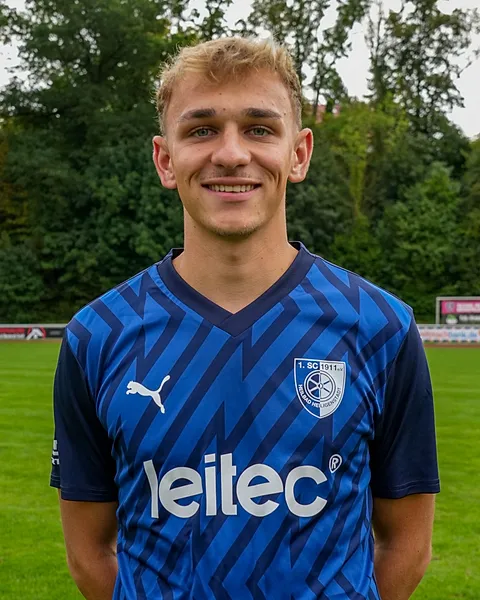
2Tim Kaufhold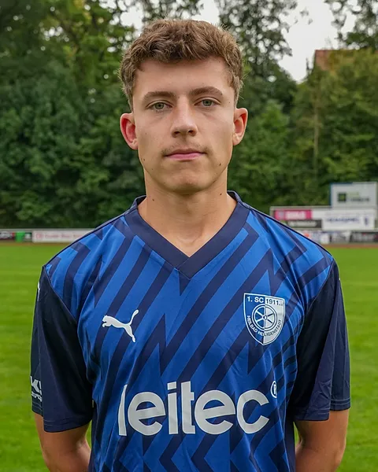
4Ben Simon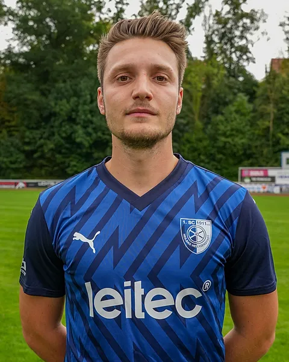
5Paul Weilandt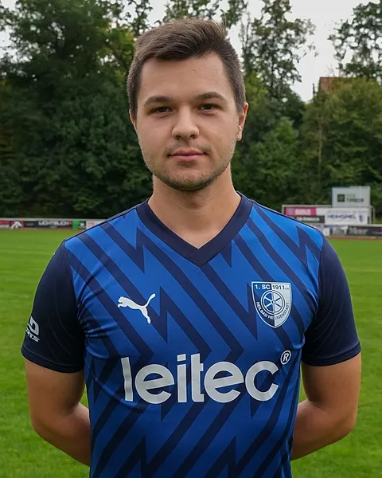
14Michael Strecker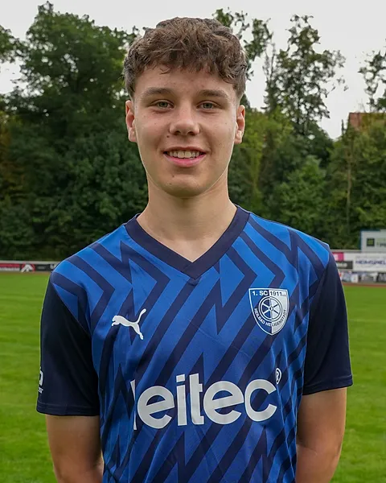
17Colin PingelMittelfeld
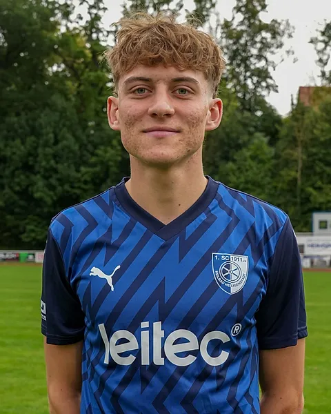
3Roman Wibe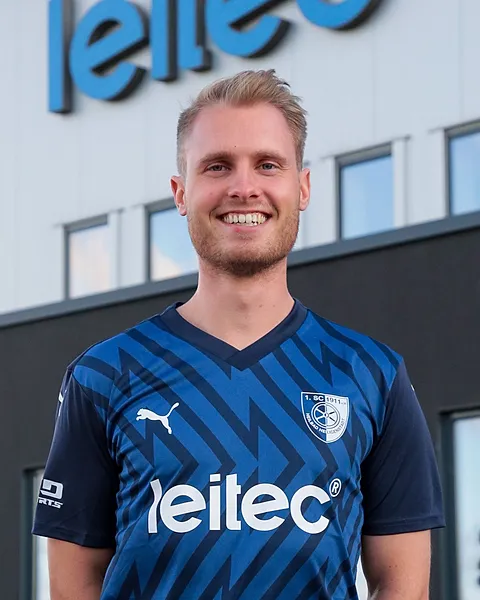
4Jonathan Kaiser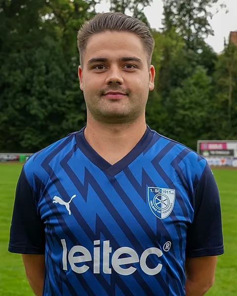
6Pascal Semper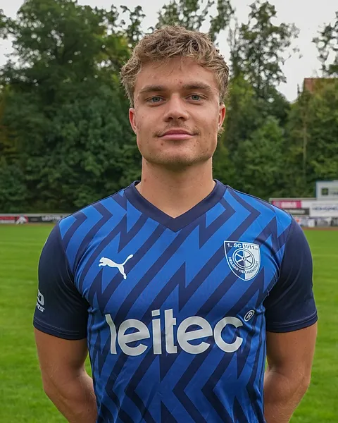
7Hermann Ungewitter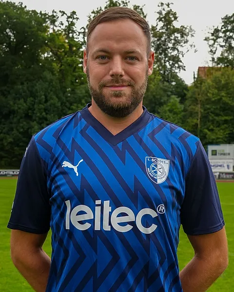
8Johannes Weidemann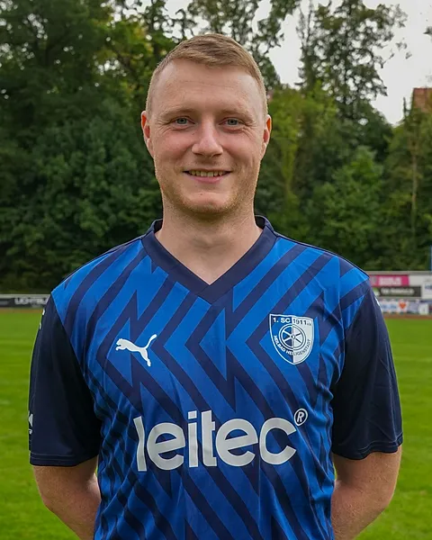
10Steven Schäfer12Lucas Aschoff
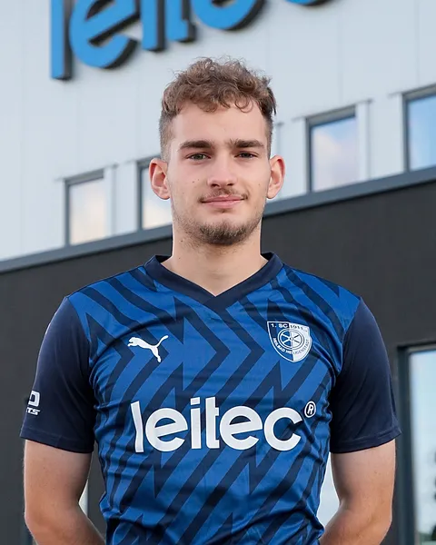
16Adam Aschoff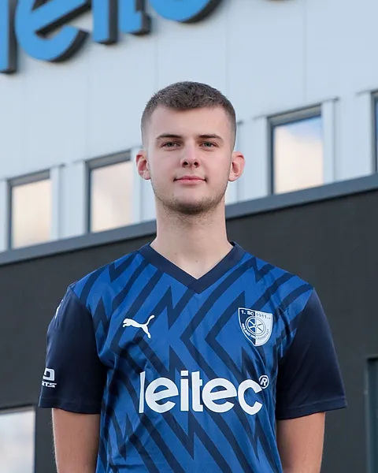
19Fabius Krohn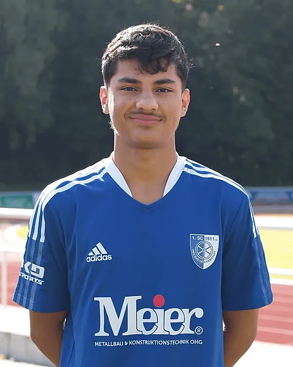
20Habash RashoAngriff
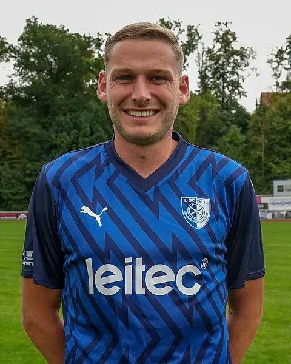
11Thomas Kahlmeyer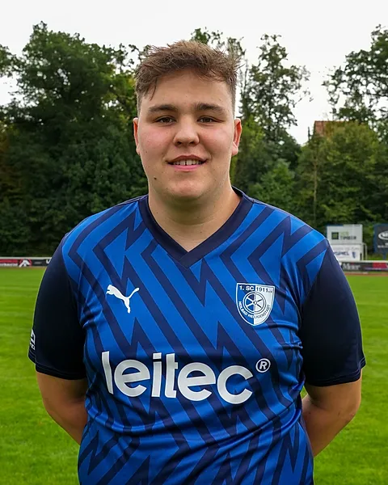
24Markus RohnerTrainerstab
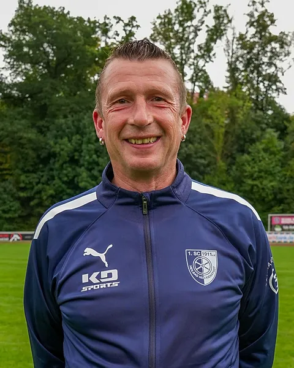
Daniel PapstTrainer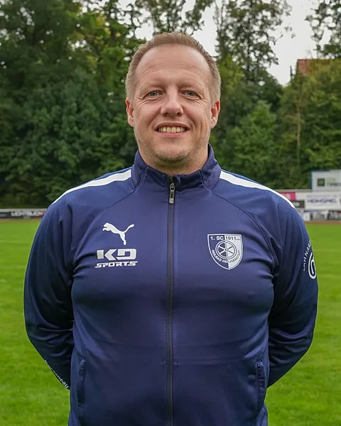
Marcus HomburgCo-TrainerNächste Spiele
- 15:00Sa, 28.11.Kreisoberliga1. SC 1911 Heiligenstadt II:SG SV Einheit WorbisHeimspielZum Spiel 1. SC 1911 Heiligenstadt II gegen SG SV Einheit Worbis
- 13:00So, 06.12.KreisoberligaSG VfB 26 Beberstedt:1. SC 1911 Heiligenstadt IIAuswärtsZum Spiel SG VfB 26 Beberstedt gegen 1. SC 1911 Heiligenstadt II
- 14:30So, 28.02.KreisfreundschaftsspieleFC Grone:1. SC 1911 Heiligenstadt IIAuswärtsZum Spiel FC Grone gegen 1. SC 1911 Heiligenstadt II
- 15:00So, 14.03.Kreisoberliga1. SC 1911 Heiligenstadt II:SV Blau-Weiß BrehmeHeimspielZum Spiel 1. SC 1911 Heiligenstadt II gegen SV Blau-Weiß Brehme
- 14:30So, 21.03.KreisoberligaSG VfB 1922 Bischofferode:1. SC 1911 Heiligenstadt IIAuswärtsZum Spiel SG VfB 1922 Bischofferode gegen 1. SC 1911 Heiligenstadt II
- 15:00So, 04.04.Kreisoberliga1. SC 1911 Heiligenstadt II:SG FSV Preußen Bad Langensalza IIHeimspielZum Spiel 1. SC 1911 Heiligenstadt II gegen SG FSV Preußen Bad Langensalza II